PROJECT
Making a Soldering Station
Our project is to make a soldering station using the iron of "Weller" soldering station. This is a group project. Me and Sibu are doing this project together. This idea came when we saw a soldering station of weller which is out of order. When we checked, we came to know that only iron is okay, and all other parts are damaged. I think it happened because it is plugged in to 230V AC supply where its working voltage is only 120V(I am not shure but it seemed to be so ). So all the internal circuits are burnt.
Soldering staion works in a feedback system. It keeps the the temperature of the tip as same by measuring the temperature inside the iron using a temperature sensor. So it uses PWM signals for heating the iron whose width changes according to the desired temperature. We explained the block diagrom of soldering station when Luciano asked.From the iron of the weller soldering station, there are 4 wires coming out. They are
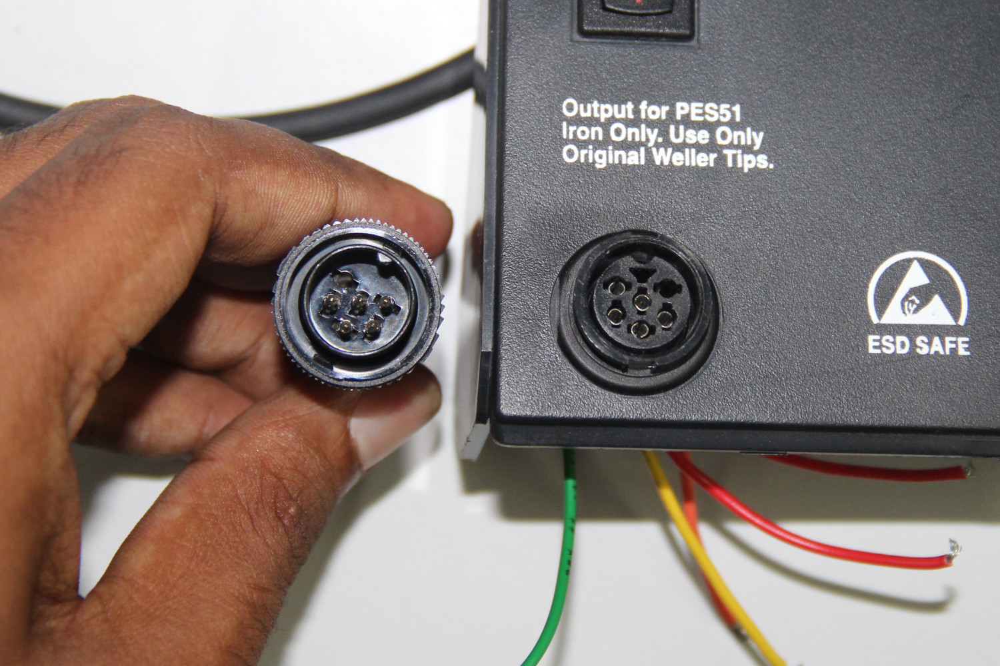
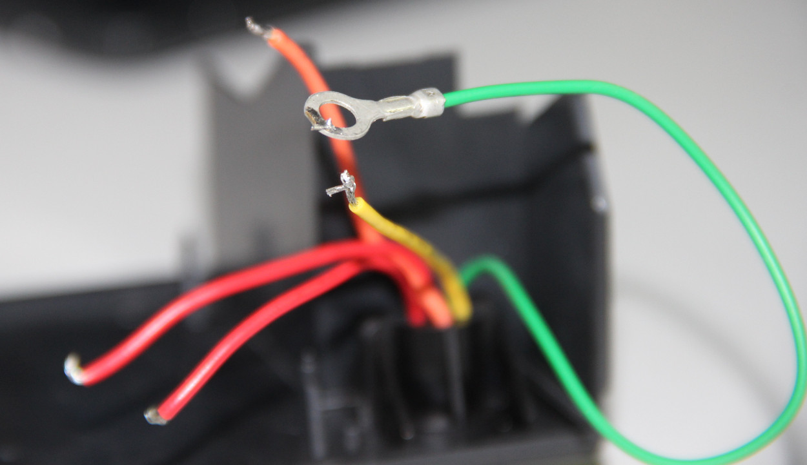
The temperature sensor is a k type thermo couple which will give out put voltage in mV according to the temperature. Reading the value from the thermo couple we have to give 24V DCvoltage to the heating coil using PWM. since a micro controller can't read voltage in mV from the thermocouple, we will use an amplifier ciruit and filter circuit for removing noise.
So the mian parts are
The micro controller we are using is Fabduino with 8MHz clock and atmega328p. I have explained about making of fabduino in week4. At the starting we used a fabduino which is already there in the lab, but later we made one ourselves.
We will use two switches for adjusting the temperature and a diplay for showing the temperature. The display we are using is 16x2 Liquid Crystal Display which is already available in the lab
So the main part of the projects are. We try everything seperately and will put all together lastThe circuit:
* LCD RS pin to digital pin 7
* LCD Enable pin to digital pin 6
* LCD D4 pin to digital pin 5
* LCD D5 pin to digital pin 4
* LCD D6 pin to digital pin 3
* LCD D7 pin to digital pin 2
* LCD R/W pin to ground
* LCD pins 1 & 2 to +5V and ground
* LCD VO pin (pin 3) to ground
For connecting, we use bread board. SInce there is no pins on the display, (only some wholes) i soldered some connector pins on the display so that we insert it ditectly to the breadboarD. I made all the connection and the next part is trying some programs to test the display. I opened the arduino IDE. There are inbuilt libraries for LCD and so it is simple to write codes.The board is selected as arduino pro mini with 8Mhz resonator and programer as USBtiny
The sample code i tried is:
#include < LiquidCrystal.h >
// initialize the library with the numbers of the interface pins
LiquidCrystal lcd(7, 6, 5, 4, 3, 2);
void setup() {
// set up the LCD's number of columns and rows:
lcd.begin(16,2);
}
void loop() {
// set the cursor to (0,0):
lcd.setCursor(1, 0);
// print from 0 to 9:
lcd.print("FAB ACADEMY");
char a[32]= "Hello dude, this is Fab Academy";
for (int i =0; i<32;i++){
lcd.setCursor(1,1);
for (int j=i; j<32;j++){
lcd.print(a[j]);
}
delay(500);
}
}
Although there is a function for runnig sentences in arduino I didn't use it. I wrote another using loop.
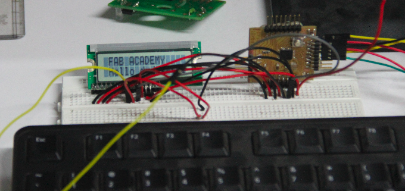
SO interfacing the LCD is somewhat ready, and the final code for showing the temperature will write latter, once we set all other things.
Amplifier circuite is necessary and most important in this project. The mV values from the thermo couple can't be read my the MC precisely, and also there will be lot of noise and fluctuations. SO we use amplifier with a filter.
We started desigining using a pen and paper from the basic circuits. By discussing and searching in the internet , we made a design for the amplifier circuit. We used two step aplification , using two opamp. The final design is here
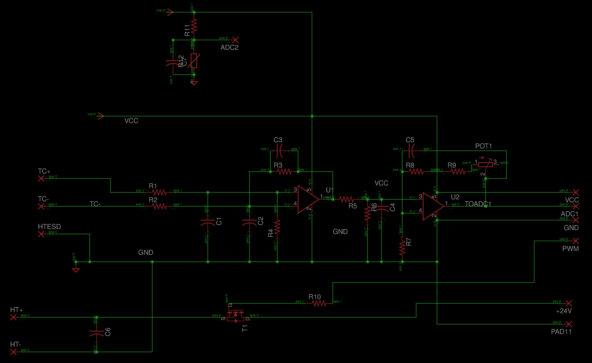
The values of the components are in the next picture.
Next is to draw the design in the Eagle for pcb printing. The scematic and the bord diagrams are here :
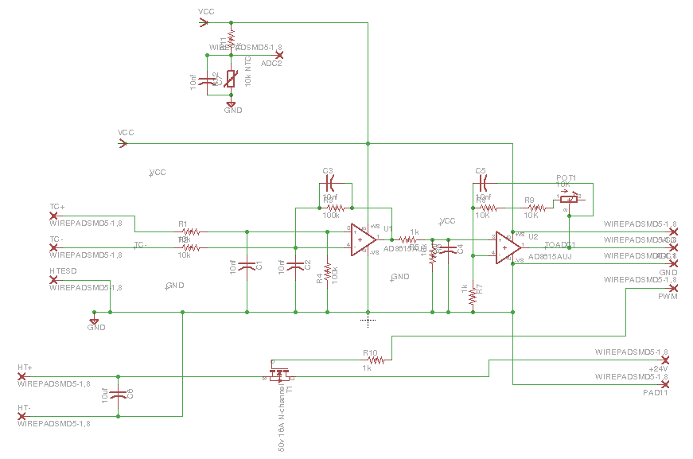
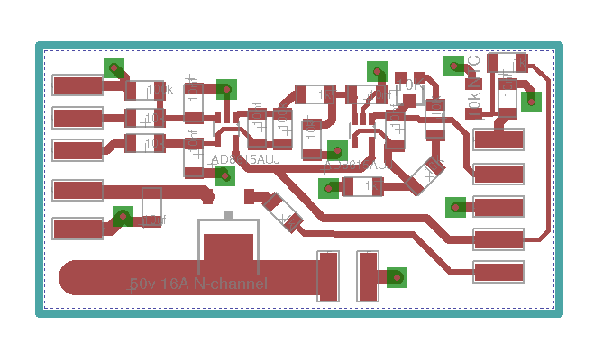
Schematic, Board
All the design and coomponents are ready, next is to mill a pcb and to solder all the components on the board. I have explained how to mill a pcb already. So i am not explaining it here. We milled the pcb and and soldered. the .png file for milling pcb is here :
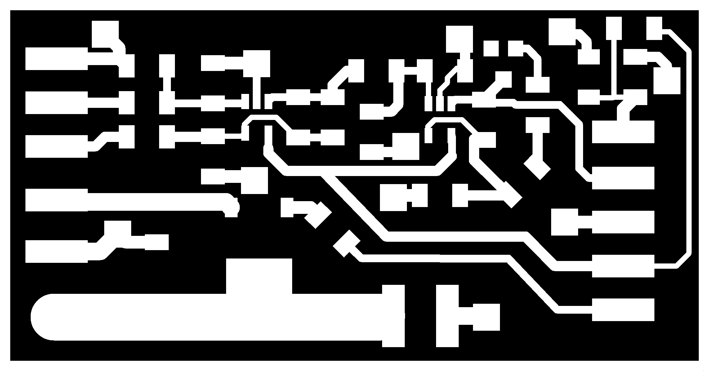
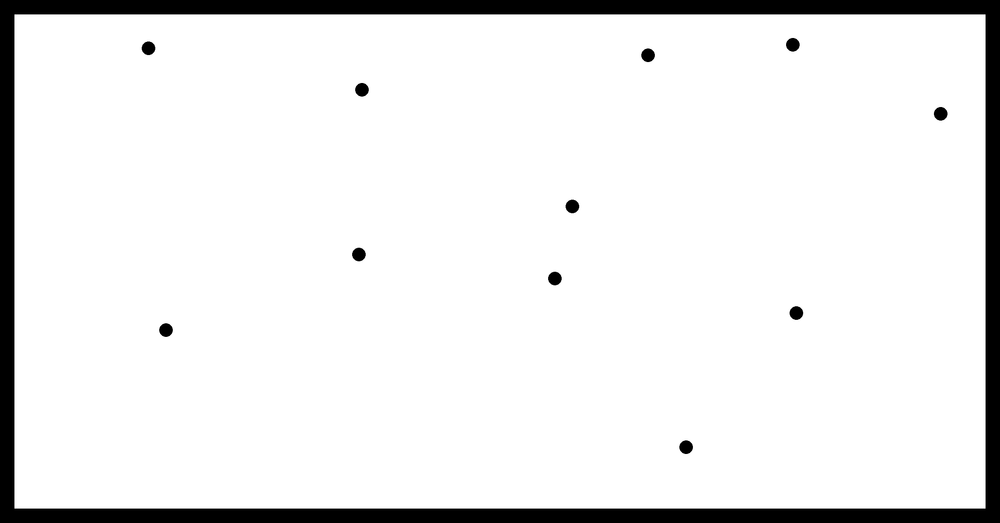
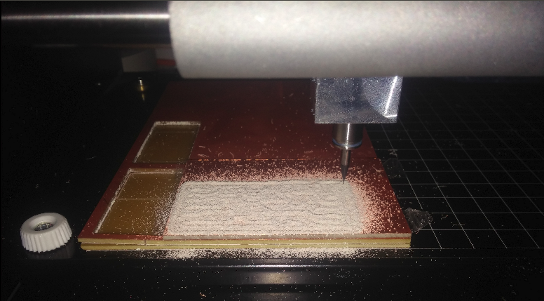
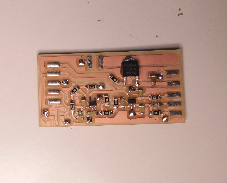
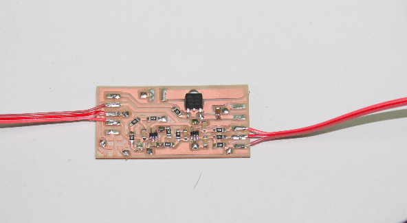
#include < LiquidCrystal.h >
// initialize the library with the numbers of the interface pins
LiquidCrystal lcd(7, 6, 5, 4, 3, 2);
int val =0;
void setup() {
// set up the LCD's number of columns and rows:
lcd.begin(16,2);
}
void loop() {
lcd.setCursor(1, 0);
lcd.print("FAB ACADEMY");
val = analogRead(A0);
delay(1);
lcd.setCursor(1,1);
lcd.print(val);
delay(100);
}
Next we tried the PWM function. PWM means pulse width modulation. Simply, giving output in several intervals , instead of continiously. We use this function for controlling the 24V supply to the heater hence to keep the iron at desired temperature. The code for generating PWM signals is given below.
void setup() {
pinMode(9, OUTPUT);
TCCR1A = _BV(COM1A1) | _BV(WGM11) ;
TCCR1B = _BV(CS11) | _BV(CS10) | _BV(WGM12) | _BV(WGM13);
ICR1=1000;
}
void loop() {
OCR1A = 500;
}
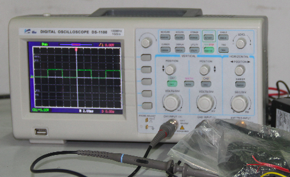
Putting all together
Everything were tested sperately and next is putting all these together. This process also has many steps. First thing we tried is taking the value from the thermo couple using the amplifier and showing the temperature on the LCD. We used a function for getting the temperature from the amplifier reading. The amplifier gives a reading. From this reading we calculate the temperature. This function is already available from the thermocouple datasheet. But this function was a 9th degree polynomial. That means it needs 8 calibration points and at present it is not possible. Since the graph of the thermocouple (Temp Vs voltage) is almost linear we tried with one caliberation point.
The problem with calibaration is we dont have a thermometer to detect the temperature on the iron. But we can measure one Temperature point, which is 100 degree celcius!! How ?? here is the funny thing comes, the water boils at 100 celcius. Cool..!!! We put the tip of the iron in the water and waited till it boils. When it boils, it means the tip is at 100 celcius.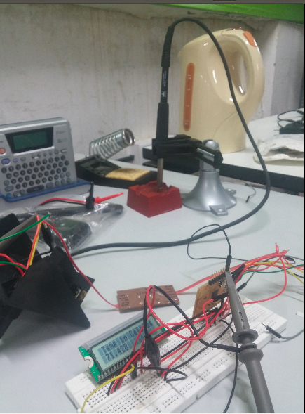
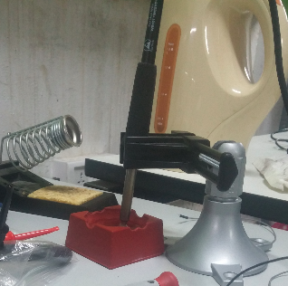 The code for the above process is here
#include
LiquidCrystal lcd(7, 6, 5, 4, 3, 2);
int rawin =0;
float temp=0.0;
void setup() {
lcd.begin(16,2);
}
void loop() {
// set the cursor to (0,0):
lcd.setCursor(1, 0);
lcd.print("Temp in Celsius");
rawin = analogRead(A0);
temp = rawin*0.22+20.0;
delay(1);
lcd.setCursor(1,1);
lcd.print(temp);
delay(100);
}
The interupt Switches
For adjusting the temperature we need two switches. Since the main loop in the code will be always busy with maintaing the given reference temperature. So taking input values we need Interupts. Since the default interupts pins are used (not for interupt, for lcd) we used PCInt pins. So we tried a sample program to change the pwm width using the interupt pins. The code is below
#include
#include
int a =20, b=0;
void quicfunc0() {
a++;
delay(500);
};
void quicfunc1() {
a--;
delay(500);
};
LiquidCrystal lcd(7, 6, 5, 4, 3, 2);
void setup() {
pinMode(A3, INPUT_PULLUP);
attachPinChangeInterrupt(A3, quicfunc0, FALLING);
pinMode(A4, INPUT_PULLUP);
attachPinChangeInterrupt(A4, quicfunc1, FALLING);
pinMode(9,OUTPUT);
lcd.begin(16,2);
TCCR1A = _BV(COM1A1) | _BV(WGM11) ;
TCCR1B = _BV(CS11) | _BV(CS10) | _BV(WGM12) | _BV(WGM13);
ICR1=1000;
lcd.setCursor(1,0);
lcd.print("Hello world");
delay(3000);
lcd.clear();
}
// the loop routine runs over and over again forever:
void loop() {
b= a*10 ;
lcd.setCursor(1,0);
lcd.print(a);
OCR1A = b;
lcd.setCursor(1,1);
lcd.print(OCR1A);
}
The most important part. We are planning to use a P/PD algorithm. We have just wrote the algorithm on the board.
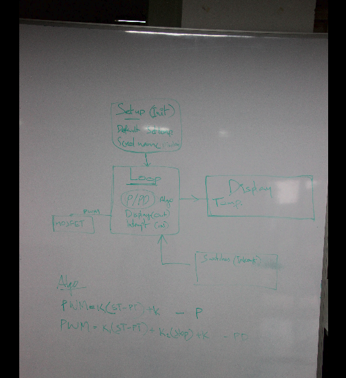
Sorry that it is not very clear to read, the color we used was wrong. But it is possible. Another thing , we both have bad handwriting !! Next is the final code!